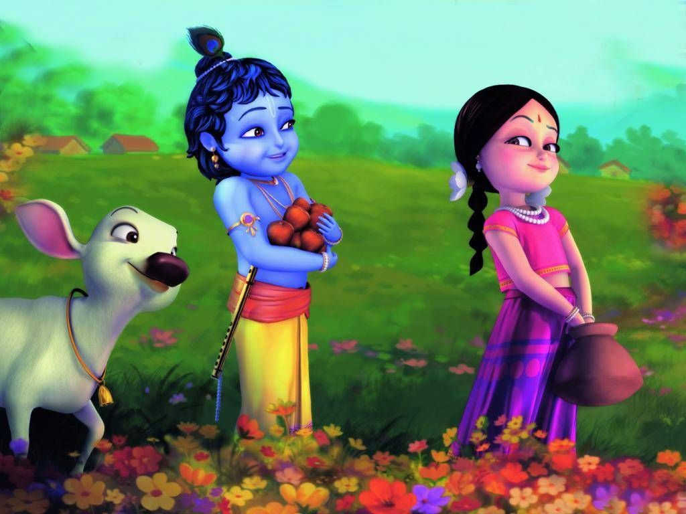

He is worshipped as the eighth avatar of Vishnu and also as the Supreme god in his own right. He is the god of protection, compassion, tenderness, and love; and is one of the most popular and widely revered among Indian divinities.
Sanskrit was the main language and widely spoken from Satyug untill Dwapar yug. So, Lord Sri Rama and Lord Sri Krishna used to speak Sanskrit in their respective areas. All the granths viz Ramayana, Mahabharata, Bhagwad Geeta, Vedas, Puraans and Upanishads are written in Sanskrit language.
The figure of Lord Krishna is depicted as having blue or blue-black skin. He holds a flute (bansuri) and sometimes accompanied by a cow or cowherd. Krishna is also known by many other names, such as Govinda, Madhusudhana, Vasudeva and Mukunda.